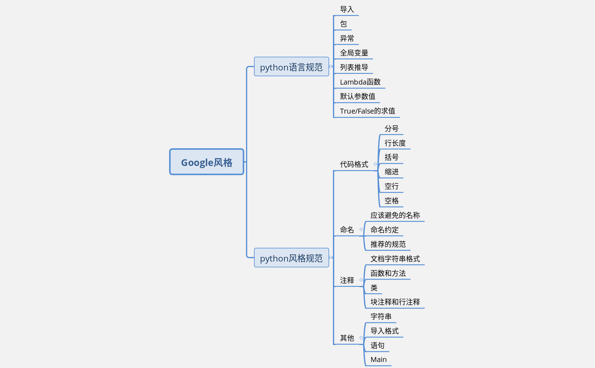

主要内容：¶
本文主要内容如上图，为从google-python-style摘取的部分常用规范。全部规范见参考链接或扩展链接。
Python语言规范¶
导入¶
Tip
仅对包和模块使用导入,而不单独导入函数或者类。typing模块例外
- 定义:
模块间共享代码的重用机制.
- 优点:
命名空间管理约定十分简单. 每个标识符的源都用一种一致的方式指示. x.Obj表示Obj对象定义在模块x中.
- 缺点:
模块名仍可能冲突. 有些模块名太长, 不太方便.
- 结论:
使用
import x来导入包和模块.使用
from x import y, 其中x是包前缀, y是不带前缀的模块名.使用
from x import y as z, 如果两个要导入的模块都叫做y或者y太长了.仅当缩写
z是通用缩写时才可使用import y as z.(比如np代表numpy.)
例如, 模块
sound.effects.echo可以用如下方式导入:from sound.effects import echo ... echo.EchoFilter(input, output, delay=0.7, atten=4)
导入时不要使用相对名称. 即使模块在同一个包中, 也要使用完整包名. 这能帮助你避免无意间导入一个包两次.
导入
typing和 six.moves 模块时可以例外.
包¶
Tip
使用模块的全路径名来导入每个模块
- 优点:
避免模块名冲突或是因非预期的模块搜索路径导致导入错误. 查找包更容易.
- 缺点:
部署代码变难, 因为你必须复制包层次.
- 结论:
所有的新代码都应该用完整包名来导入每个模块.
应该像下面这样导入:
yes:
# 在代码中引用完整名称 absl.flags (详细情况). import absl.flags from doctor.who import jodie FLAGS = absl.flags.FLAGS
# 在代码中仅引用模块名 flags (常见情况). from absl import flags from doctor.who import jodie FLAGS = flags.FLAGS
No: (假设当前文件和 jodie.py 都在目录 doctor/who/ 下)
# 没能清晰指示出作者想要导入的模块和最终被导入的模块. # 实际导入的模块将取决于 sys.path. import jodie
不应假定主入口脚本所在的目录就在 sys.path 中，虽然这种情况是存在的。当主入口脚本所在目录不在 sys.path 中时，代码将假设 import jodie 是导入的一个第三方库或者是一个名为 jodie 的顶层包，而不是本地的 jodie.py
异常¶
Tip
允许使用异常, 但必须小心
- 定义:
异常是一种跳出代码块的正常控制流来处理错误或者其它异常条件的方式.
- 优点:
正常操作代码的控制流不会和错误处理代码混在一起. 当某种条件发生时, 它也允许控制流跳过多个框架. 例如, 一步跳出N个嵌套的函数, 而不必继续执行错误的代码.
- 缺点:
可能会导致让人困惑的控制流. 调用库时容易错过错误情况.
- 结论:
异常必须遵守特定条件:
优先合理的使用内置异常类.比如
ValueError指示了一个程序错误, 比如在方法需要正数的情况下传递了一个负数错误.不要使用assert语句来验证公共API的参数值.assert是用来保证内部正确性的,而不是用来强制纠正参数使用.若需要使用异常来指示某些意外情况,不要用assert,用raise语句,例如:
Yes:
def connect_to_next_port(self, minimum): """Connects to the next available port. Args: minimum: A port value greater or equal to 1024. Returns: The new minimum port. Raises: ConnectionError: If no available port is found. """ if minimum < 1024: # Note that this raising of ValueError is not mentioned in the doc # string's "Raises:" section because it is not appropriate to # guarantee this specific behavioral reaction to API misuse. raise ValueError(f'Min. port must be at least 1024, not {minimum}.') port = self._find_next_open_port(minimum) if not port: raise ConnectionError( f'Could not connect to service on port {minimum} or higher.') assert port >= minimum, ( f'Unexpected port {port} when minimum was {minimum}.') return port
No:
def connect_to_next_port(self, minimum): """Connects to the next available port. Args: minimum: A port value greater or equal to 1024. Returns: The new minimum port. """ assert minimum >= 1024, 'Minimum port must be at least 1024.' port = self._find_next_open_port(minimum) assert port is not None return port
模块或包应该定义自己的特定域的异常基类, 这个基类应该从内建的Exception类继承. 模块的异常基类后缀应该叫做
Error.永远不要使用
except:语句来捕获所有异常, 也不要捕获Exception或者StandardError, 除非你打算重新触发该异常, 或者你已经在当前线程的最外层(记得还是要打印一条错误消息). 在异常这方面, Python非常宽容,except:真的会捕获包括Python语法错误在内的任何错误. 使用except:很容易隐藏真正的bug.尽量减少try/except块中的代码量. try块的体积越大, 期望之外的异常就越容易被触发. 这种情况下, try/except块将隐藏真正的错误.
使用finally子句来执行那些无论try块中有没有异常都应该被执行的代码. 这对于清理资源常常很有用, 例如关闭文件.
全局变量¶
Tip
避免全局变量
- 定义:
定义在模块级的变量.
- 优点:
偶尔有用.
- 缺点:
导入时可能改变模块行为, 因为导入模块时会对模块级变量赋值.
- 结论:
避免使用全局变量. 鼓励使用模块级的常量,例如
MAX_HOLY_HANDGRENADE_COUNT = 3.注意常量命名必须全部大写,用_分隔.具体参见 命名规则 若必须要使用全局变量,应在模块内声明全局变量,并在名称前_使之成为模块内部变量.外部访问必须通过模块级的公共函数.
推导式&生成式¶
Tip
可以在简单情况下使用
- 定义:
列表,字典和集合的推导&生成式提供了一种简洁高效的方式来创建容器和迭代器, 而不必借助map(), filter(), 或者lambda.(译者注: 元组是没有推导式的,
()内加类似推导式的句式返回的是个生成器)- 优点:
简单的列表推导可以比其它的列表创建方法更加清晰简单. 生成器表达式可以十分高效, 因为它们避免了创建整个列表.
- 缺点:
复杂的列表推导或者生成器表达式可能难以阅读.
- 结论:
适用于简单情况. 每个部分应该单独置于一行: 映射表达式, for语句, 过滤器表达式. 禁止多重for语句或过滤器表达式. 复杂情况下还是使用循环.
Yes:
result = [mapping_expr for value in iterable if filter_expr] result = [{'key': value} for value in iterable if a_long_filter_expression(value)] result = [complicated_transform(x) for x in iterable if predicate(x)] descriptive_name = [ transform({'key': key, 'value': value}, color='black') for key, value in generate_iterable(some_input) if complicated_condition_is_met(key, value) ] result = [] for x in range(10): for y in range(5): if x * y > 10: result.append((x, y)) return {x: complicated_transform(x) for x in long_generator_function(parameter) if x is not None} squares_generator = (x**2 for x in range(10)) unique_names = {user.name for user in users if user is not None} eat(jelly_bean for jelly_bean in jelly_beans if jelly_bean.color == 'black')
No:
result = [(x, y) for x in range(10) for y in range(5) if x * y > 10] return ((x, y, z) for x in xrange(5) for y in xrange(5) if x != y for z in xrange(5) if y != z)
Lambda函数¶
Tip
适用于单行函数
- 定义:
与语句相反, lambda在一个表达式中定义匿名函数. 常用于为
map()和filter()之类的高阶函数定义回调函数或者操作符.- 优点:
方便.
- 缺点:
比本地函数更难阅读和调试. 没有函数名意味着堆栈跟踪更难理解. 由于lambda函数通常只包含一个表达式, 因此其表达能力有限.
- 结论:
适用于单行函数. 如果代码超过60-80个字符, 最好还是定义成常规(嵌套)函数.
对于常见的操作符，例如乘法操作符，使用
operator模块中的函数以代替lambda函数. 例如, 推荐使用operator.mul, 而不是lambda x, y: x * y.
默认参数值¶
Tip
适用于大部分情况.
- 定义:
你可以在函数参数列表的最后指定变量的值, 例如,
def foo(a, b = 0):. 如果调用foo时只带一个参数, 则b被设为0. 如果带两个参数, 则b的值等于第二个参数.- 优点:
你经常会碰到一些使用大量默认值的函数, 但偶尔(比较少见)你想要覆盖这些默认值. 默认参数值提供了一种简单的方法来完成这件事, 你不需要为这些罕见的例外定义大量函数. 同时, Python也不支持重载方法和函数, 默认参数是一种”仿造”重载行为的简单方式.
- 缺点:
默认参数只在模块加载时求值一次. 如果参数是列表或字典之类的可变类型, 这可能会导致问题. 如果函数修改了对象(例如向列表追加项), 默认值就被修改了.
- 结论:
鼓励使用, 不过有如下注意事项:
不要在函数或方法定义中使用可变对象作为默认值.
Yes: def foo(a, b=None): if b is None: b = [] Yes: def foo(a, b: Optional[Sequence] = None): if b is None: b = [] Yes: def foo(a, b: Sequence = ()): # Empty tuple OK since tuples are immutable
No: def foo(a, b=[]): ... No: def foo(a, b=time.time()): # The time the module was loaded??? ... No: def foo(a, b=FLAGS.my_thing): # sys.argv has not yet been parsed... ... No: def foo(a, b: Mapping = {}): # Could still get passed to unchecked code ...
True/False的求值¶
Tip
尽可能使用隐式false
- 定义:
Python在布尔上下文中会将某些值求值为false. 按简单的直觉来讲, 就是所有的”空”值都被认为是false. 因此0， None, [], {}, “” 都被认为是false.
- 优点:
使用Python布尔值的条件语句更易读也更不易犯错. 大部分情况下, 也更快.
- 缺点:
对C/C++开发人员来说, 可能看起来有点怪.
- 结论:
尽可能使用隐式的false, 例如: 使用
if foo:而不是if foo != []:. 不过还是有一些注意事项需要你铭记在心:- 对于
None等单例对象测试时,使用is或者is not.当你要测试一个默认值是None的变量或参数是否被设为其它值. 这个值在布尔语义下可能是false! (译者注:
is比较的是对象的id(), 这个函数返回的通常是对象的内存地址,考虑到CPython的对象重用机制,可能会出现生命周不重叠的两个对象会有相同的id)
- 对于
永远不要用==将一个布尔量与false相比较. 使用
if not x:代替. 如果你需要区分false和None, 你应该用像if not x and x is not None:这样的语句.对于序列(字符串, 列表, 元组), 要注意空序列是false. 因此
if not seq:或者if seq:比if len(seq):或if not len(seq):要更好.处理整数时, 使用隐式false可能会得不偿失(即不小心将None当做0来处理). 你可以将一个已知是整型(且不是len()的返回结果)的值与0比较.
Yes:
if not users: print('no users') if foo == 0: self.handle_zero() if i % 10 == 0: self.handle_multiple_of_ten() def f(x=None): if x is None: x = []
No:
if len(users) == 0: print 'no users' if foo is not None and not foo: self.handle_zero() if not i % 10: self.handle_multiple_of_ten() def f(x=None): x = x or []
注意’0’(字符串)会被当做true.
Python风格规范¶
代码格式¶
分号¶
Tip
不要在行尾加分号, 也不要用分号将两条命令放在同一行.
行长度¶
Tip
每行不超过80个字符
例外:
长的导入模块语句
注释里的URL,路径以及其他的一些长标记
不便于换行，不包含空格的模块级字符串常量，比如url或者路径
Pylint 禁用注释.（例如：# pylint: disable=invalid-name）
除非是在 with 语句需要三个以上的上下文管理器的情况下，否则不要使用反斜杠连接行.
Python会将 圆括号, 中括号和花括号中的行隐式的连接起来 , 你可以利用这个特点. 如果需要, 你可以在表达式外围增加一对额外的圆括号.
Yes: foo_bar(self, width, height, color='black', design=None, x='foo',
emphasis=None, highlight=0)
if (width == 0 and height == 0 and
color == 'red' and emphasis == 'strong'):
如果一个文本字符串在一行放不下, 可以使用圆括号来实现隐式行连接:
x = ('This will build a very long long '
'long long long long long long string')
在注释中，如果必要，将长的URL放在一行上。
Yes: # See details at
# http://www.example.com/us/developer/documentation/api/content/v2.0/csv_file_name_extension_full_specification.html
No: # See details at
# http://www.example.com/us/developer/documentation/api/content/\
# v2.0/csv_file_name_extension_full_specification.html
当 with 表达式需要使用三个及其以上的上下文管理器时，可以使用反斜杠换行.若只需要两个，请使用嵌套的with.
Yes: with very_long_first_expression_function() as spam, \
very_long_second_expression_function() as beans, \
third_thing() as eggs:
place_order(eggs, beans, spam, beans)
No: with VeryLongFirstExpressionFunction() as spam, \
VeryLongSecondExpressionFunction() as beans:
PlaceOrder(eggs, beans, spam, beans)
Yes: with very_long_first_expression_function() as spam:
with very_long_second_expression_function() as beans:
place_order(beans, spam)
注意上面例子中的元素缩进; 你可以在本文的 缩进 部分找到解释.
另外在其他所有情况下，若一行超过80个字符，但 yapf 却无法将该行字数降至80个字符以下时，则允许该行超过80个字符长度.
括号¶
Tip
宁缺毋滥的使用括号
除非是用于实现行连接, 否则不要在返回语句或条件语句中使用括号. 不过在元组两边使用括号是可以的.
Yes: if foo:
bar()
while x:
x = bar()
if x and y:
bar()
if not x:
bar()
# For a 1 item tuple the ()s are more visually obvious than the comma.
onesie = (foo,)
return foo
return spam, beans
return (spam, beans)
for (x, y) in dict.items(): ...
No: if (x):
bar()
if not(x):
bar()
return (foo)
缩进¶
Tip
用4个空格来缩进代码
绝对不要用tab, 也不要tab和空格混用. 对于行连接的情况, 你应该要么垂直对齐换行的元素(见 行长度 部分的示例), 或者使用4空格的悬挂式缩进(这时第一行不应该有参数):
Yes: # Aligned with opening delimiter
foo = long_function_name(var_one, var_two,
var_three, var_four)
# Aligned with opening delimiter in a dictionary
foo = {
long_dictionary_key: value1 +
value2,
...
}
# 4-space hanging indent; nothing on first line
foo = long_function_name(
var_one, var_two, var_three,
var_four)
# 4-space hanging indent in a dictionary
foo = {
long_dictionary_key:
long_dictionary_value,
...
}
No: # Stuff on first line forbidden
foo = long_function_name(var_one, var_two,
var_three, var_four)
# 2-space hanging indent forbidden
foo = long_function_name(
var_one, var_two, var_three,
var_four)
# No hanging indent in a dictionary
foo = {
long_dictionary_key:
long_dictionary_value,
...
}
序列元素尾部逗号¶
Tip
仅当 ], ), } 和末位元素不在同一行时，推荐使用序列元素尾部逗号. 当末位元素尾部有逗号时，元素后的逗号可以指示 https://pypi.org/project/yapf/ 将序列格式化为每行一项.
Yes: golomb3 = [0, 1, 3]
Yes: golomb4 = [
0,
1,
4,
6,
]
No: golomb4 = [
0,
1,
4,
6
]
空行¶
Tip
顶级定义之间空两行, 方法定义之间空一行
顶级定义之间空两行, 比如函数或者类定义. 方法定义, 类定义与第一个方法之间, 都应该空一行. 函数或方法中, 某些地方要是你觉得合适, 就空一行.
空格¶
Tip
按照标准的排版规范来使用标点两边的空格
括号内不要有空格.
Yes: spam(ham[1], {eggs: 2}, [])
No: spam( ham[ 1 ], { eggs: 2 }, [ ] )
不要在逗号, 分号, 冒号前面加空格, 但应该在它们后面加(除了在行尾).
Yes: if x == 4:
print(x, y)
x, y = y, x
No: if x == 4 :
print(x , y)
x , y = y , x
参数列表, 索引或切片的左括号前不应加空格.
Yes: spam(1)
no: spam (1)
Yes: dict['key'] = list[index]
No: dict ['key'] = list [index]
在二元操作符两边都加上一个空格, 比如赋值(=), 比较(==, <, >, !=, <>, <=, >=, in, not in, is, is not), 布尔(and, or, not). 至于算术操作符两边的空格该如何使用, 需要你自己好好判断. 不过两侧务必要保持一致.
Yes: x == 1
No: x<1
当 = 用于指示关键字参数或默认参数值时, 不要在其两侧使用空格. 但若存在类型注释的时候,需要在 = 周围使用空格.
Yes: def complex(real, imag=0.0): return magic(r=real, i=imag)
Yes: def complex(real, imag: float = 0.0): return Magic(r=real, i=imag)
No: def complex(real, imag = 0.0): return magic(r = real, i = imag)
No: def complex(real, imag: float=0.0): return Magic(r = real, i = imag)
不要用空格来垂直对齐多行间的标记, 因为这会成为维护的负担(适用于:, #, =等):
Yes:
foo = 1000 # comment
long_name = 2 # comment that should not be aligned
dictionary = {
"foo": 1,
"long_name": 2,
}
No:
foo = 1000 # comment
long_name = 2 # comment that should not be aligned
dictionary = {
"foo" : 1,
"long_name": 2,
}
命名¶
Tip
模块名写法: module_name ;包名写法: package_name ;类名: ClassName ;方法名: method_name ;异常名: ExceptionName ;函数名: function_name ;全局常量名: GLOBAL_CONSTANT_NAME ;全局变量名: global_var_name ;实例名: instance_var_name ;函数参数名: function_parameter_name ;局部变量名: local_var_name .
函数名,变量名和文件名应该是描述性的,尽量避免缩写,特别要避免使用非项目人员不清楚难以理解的缩写,不要通过删除单词中的字母来进行缩写.
始终使用 .py 作为文件后缀名,不要用破折号.
应该避免的名称¶
单字符名称, 除了计数器和迭代器,作为
try/except中异常声明的e,作为with语句中文件句柄的f.包/模块名中的连字符(-)
双下划线开头并结尾的名称(Python保留, 例如__init__)
命名约定¶
所谓”内部(Internal)”表示仅模块内可用, 或者, 在类内是保护或私有的.
用单下划线(_)开头表示模块变量或函数是protected的(使用from module import *时不会包含).
用双下划线(__)开头的实例变量或方法表示类内私有.
将相关的类和顶级函数放在同一个模块里. 不像Java, 没必要限制一个类一个模块.
对类名使用大写字母开头的单词(如CapWords, 即Pascal风格), 但是模块名应该用小写加下划线的方式(如lower_with_under.py). 尽管已经有很多现存的模块使用类似于CapWords.py这样的命名, 但现在已经不鼓励这样做, 因为如果模块名碰巧和类名一致, 这会让人困扰.
文件名¶
所有python脚本文件都应该以
.py为后缀名且不包含-.若是需要一个无后缀名的可执行文件,可以使用软联接或者包含exec "$0.py" "$@"的bash脚本.
推荐的规范¶
Type |
Public |
Internal |
|---|---|---|
Modules |
lower_with_under |
_lower_with_under |
Packages |
lower_with_under |
|
Classes |
CapWords |
_CapWords |
Exceptions |
CapWords |
|
Functions |
lower_with_under() |
_lower_with_under() |
Global/Class Constants |
CAPS_WITH_UNDER |
_CAPS_WITH_UNDER |
Global/Class Variables |
lower_with_under |
_lower_with_under |
Instance Variables |
lower_with_under |
_lower_with_under (protected) or __lower_with_under (private) |
Method Names |
lower_with_under() |
_lower_with_under() (protected) or __lower_with_under() (private) |
Function/Method Parameters |
lower_with_under |
|
Local Variables |
lower_with_under |
注释¶
Tip
确保对模块, 函数, 方法和行内注释使用正确的风格
文档字符串¶
Python有一种独一无二的的注释方式: 使用文档字符串. 文档字符串是包, 模块, 类或函数里的第一个语句. 这些字符串可以通过对象的
__doc__成员被自动提取, 并且被pydoc所用. (你可以在你的模块上运行pydoc试一把, 看看它长什么样). 我们对文档字符串的惯例是使用三重双引号”””( PEP-257 ). 一个文档字符串应该这样组织: 首先是一行以句号, 问号或惊叹号结尾的概述(或者该文档字符串单纯只有一行). 接着是一个空行. 接着是文档字符串剩下的部分, 它应该与文档字符串的第一行的第一个引号对齐. 下面有更多文档字符串的格式化规范.
函数和方法¶
下文所指的函数,包括函数, 方法, 以及生成器.
一个函数必须要有文档字符串, 除非它满足以下条件:
外部不可见
非常短小
简单明了
文档字符串应该包含函数做什么, 以及输入和输出的详细描述. 通常, 不应该描述”怎么做”, 除非是一些复杂的算法. 文档字符串应该提供足够的信息, 当别人编写代码调用该函数时, 他不需要看一行代码, 只要看文档字符串就可以了. 对于复杂的代码, 在代码旁边加注释会比使用文档字符串更有意义. 覆盖基类的子类方法应有一个类似
See base class的简单注释来指引读者到基类方法的文档注释.若重载的子类方法和基类方法有很大不同,那么注释中应该指明这些信息.关于函数的几个方面应该在特定的小节中进行描述记录， 这几个方面如下文所述. 每节应该以一个标题行开始. 标题行以冒号结尾. 除标题行外, 节的其他内容应被缩进2个空格.
- Args:
列出每个参数的名字, 并在名字后使用一个冒号和一个空格, 分隔对该参数的描述.如果描述太长超过了单行80字符,使用2或者4个空格的悬挂缩进(与文件其他部分保持一致). 描述应该包括所需的类型和含义. 如果一个函数接受*foo(可变长度参数列表)或者**bar (任意关键字参数), 应该详细列出*foo和**bar.
- Returns: (或者 Yields: 用于生成器)
描述返回值的类型和语义. 如果函数返回None, 这一部分可以省略.
- Raises:
列出与接口有关的所有异常.
def fetch_smalltable_rows(table_handle: smalltable.Table, keys: Sequence[Union[bytes, str]], require_all_keys: bool = False, ) -> Mapping[bytes, Tuple[str]]: """Fetches rows from a Smalltable. Retrieves rows pertaining to the given keys from the Table instance represented by table_handle. String keys will be UTF-8 encoded. Args: table_handle: An open smalltable.Table instance. keys: A sequence of strings representing the key of each table row to fetch. String keys will be UTF-8 encoded. require_all_keys: Optional; If require_all_keys is True only rows with values set for all keys will be returned. Returns: A dict mapping keys to the corresponding table row data fetched. Each row is represented as a tuple of strings. For example: {b'Serak': ('Rigel VII', 'Preparer'), b'Zim': ('Irk', 'Invader'), b'Lrrr': ('Omicron Persei 8', 'Emperor')} Returned keys are always bytes. If a key from the keys argument is missing from the dictionary, then that row was not found in the table (and require_all_keys must have been False). Raises: IOError: An error occurred accessing the smalltable. """在
Args:上进行换行也是可以的:def fetch_smalltable_rows(table_handle: smalltable.Table, keys: Sequence[Union[bytes, str]], require_all_keys: bool = False, ) -> Mapping[bytes, Tuple[str]]: """Fetches rows from a Smalltable. Retrieves rows pertaining to the given keys from the Table instance represented by table_handle. String keys will be UTF-8 encoded. Args: table_handle: An open smalltable.Table instance. keys: A sequence of strings representing the key of each table row to fetch. String keys will be UTF-8 encoded. require_all_keys: Optional; If require_all_keys is True only rows with values set for all keys will be returned. Returns: A dict mapping keys to the corresponding table row data fetched. Each row is represented as a tuple of strings. For example: {b'Serak': ('Rigel VII', 'Preparer'), b'Zim': ('Irk', 'Invader'), b'Lrrr': ('Omicron Persei 8', 'Emperor')} Returned keys are always bytes. If a key from the keys argument is missing from the dictionary, then that row was not found in the table (and require_all_keys must have been False). Raises: IOError: An error occurred accessing the smalltable. """
类¶
类应该在其定义下有一个用于描述该类的文档字符串. 如果你的类有公共属性(Attributes), 那么文档中应该有一个属性(Attributes)段. 并且应该遵守和函数参数相同的格式.
class SampleClass(object): """Summary of class here. Longer class information.... Longer class information.... Attributes: likes_spam: A boolean indicating if we like SPAM or not. eggs: An integer count of the eggs we have laid. """ def __init__(self, likes_spam=False): """Inits SampleClass with blah.""" self.likes_spam = likes_spam self.eggs = 0 def public_method(self): """Performs operation blah."""
块注释和行注释¶
最需要写注释的是代码中那些技巧性的部分. 如果你在下次 代码审查 的时候必须解释一下, 那么你应该现在就给它写注释. 对于复杂的操作, 应该在其操作开始前写上若干行注释. 对于不是一目了然的代码, 应在其行尾添加注释.
# We use a weighted dictionary search to find out where i is in # the array. We extrapolate position based on the largest num # in the array and the array size and then do binary search to # get the exact number. if i & (i-1) == 0: # True if i is 0 or a power of 2.为了提高可读性, 注释应该至少离开代码2个空格.
另一方面, 绝不要描述代码. 假设阅读代码的人比你更懂Python, 他只是不知道你的代码要做什么.
# BAD COMMENT: Now go through the b array and make sure whenever i occurs # the next element is i+1
其他¶
字符串¶
Tip
即使参数都是字符串, 使用%操作符或者格式化方法格式化字符串. 不过也不能一概而论, 你需要在+和%之间好好判定.
Yes: x = a + b
x = '%s, %s!' % (imperative, expletive)
x = '{}, {}!'.format(imperative, expletive)
x = 'name: %s; score: %d' % (name, n)
x = 'name: {}; score: {}'.format(name, n)
No: x = '%s%s' % (a, b) # use + in this case
x = '{}{}'.format(a, b) # use + in this case
x = imperative + ', ' + expletive + '!'
x = 'name: ' + name + '; score: ' + str(n)
避免在循环中用+和+=操作符来累加字符串. 由于字符串是不可变的, 这样做会创建不必要的临时对象, 并且导致二次方而不是线性的运行时间. 作为替代方案, 你可以将每个子串加入列表, 然后在循环结束后用 .join 连接列表. (也可以将每个子串写入一个 cStringIO.StringIO 缓存中.)
Yes: items = ['<table>']
for last_name, first_name in employee_list:
items.append('<tr><td>%s, %s</td></tr>' % (last_name, first_name))
items.append('</table>')
employee_table = ''.join(items)
No: employee_table = '<table>'
for last_name, first_name in employee_list:
employee_table += '<tr><td>%s, %s</td></tr>' % (last_name, first_name)
employee_table += '</table>'
在同一个文件中, 保持使用字符串引号的一致性. 使用单引号’或者双引号”之一用以引用字符串, 并在同一文件中沿用. 在字符串内可以使用另外一种引号, 以避免在字符串中使用.
Yes:
Python('Why are you hiding your eyes?')
Gollum("I'm scared of lint errors.")
Narrator('"Good!" thought a happy Python reviewer.')
No:
Python("Why are you hiding your eyes?")
Gollum('The lint. It burns. It burns us.')
Gollum("Always the great lint. Watching. Watching.")
为多行字符串使用三重双引号”””而非三重单引号’’’. 当且仅当项目中使用单引号’来引用字符串时, 才可能会使用三重’’’为非文档字符串的多行字符串来标识引用. 文档字符串必须使用三重双引号”””. 多行字符串不应随着代码其他部分缩进的调整而发生位置移动. 如果需要避免在字符串中嵌入额外的空间,可以使用串联的单行字符串或者使用 textwrap.dedent() 来删除每行多余的空间.
No:
long_string = """This is pretty ugly.
Don't do this.
"""
Yes:
long_string = """This is fine if your use case can accept
extraneous leading spaces."""
Yes:
long_string = ("And this is fine if you cannot accept\n" +
"extraneous leading spaces.")
Yes:
long_string = ("And this too is fine if you cannot accept\n"
"extraneous leading spaces.")
Yes:
import textwrap
long_string = textwrap.dedent("""\
This is also fine, because textwrap.dedent()
will collapse common leading spaces in each line.""")
导入格式¶
Tip
每个导入应该独占一行, typing 的导入除外
Yes: import os
import sys
from typing import Mapping, Sequence
No: import os, sys
导入总应该放在文件顶部, 位于模块注释和文档字符串之后, 模块全局变量和常量之前. 导入应该按照从最通用到最不通用的顺序分组:
__future__导入
from __future__ import absolute_import
from __future__ import division
from __future__ import print_function
标准库导入
import sys
第三方库导入
import tensorflow as tf
本地代码子包导入
from otherproject.ai import mind
每种分组中, 应该根据每个模块的完整包路径按字典序排序, 忽略大小写.
import collections
import queue
import sys
from absl import app
from absl import flags
import bs4
import cryptography
import tensorflow as tf
from book.genres import scifi
from myproject.backend import huxley
from myproject.backend.hgwells import time_machine
from myproject.backend.state_machine import main_loop
from otherproject.ai import body
from otherproject.ai import mind
from otherproject.ai import soul
# Older style code may have these imports down here instead:
#from myproject.backend.hgwells import time_machine
#from myproject.backend.state_machine import main_loop
语句¶
Tip
通常每个语句应该独占一行
不过, 如果测试结果与测试语句在一行放得下, 你也可以将它们放在同一行. 如果是if语句, 只有在没有else时才能这样做. 特别地, 绝不要对 try/except 这样做, 因为try和except不能放在同一行.
Yes:
if foo: bar(foo)
No:
if foo: bar(foo)
else: baz(foo)
try: bar(foo)
except ValueError: baz(foo)
try:
bar(foo)
except ValueError: baz(foo)
Main¶
Tip
即使是一个打算被用作脚本的文件, 也应该是可导入的. 并且简单的导入不应该导致这个脚本的主功能(main functionality)被执行, 这是一种副作用. 主功能应该放在一个main()函数中.
在Python中, pydoc以及单元测试要求模块必须是可导入的. 你的代码应该在执行主程序前总是检查 if __name__ == '__main__' , 这样当模块被导入时主程序就不会被执行.
若使用 absl, 请使用 app.run :
from absl import app
...
def main(argv):
# process non-flag arguments
...
if __name__ == '__main__':
app.run(main)
否则,使用:
def main():
...
if __name__ == '__main__':
main()
所有的顶级代码在模块导入时都会被执行. 要小心不要去调用函数, 创建对象, 或者执行那些不应该在使用pydoc时执行的操作.
参考：¶
https://github.com/zh-google-styleguide/zh-google-styleguide/tree/master/google-python-styleguide